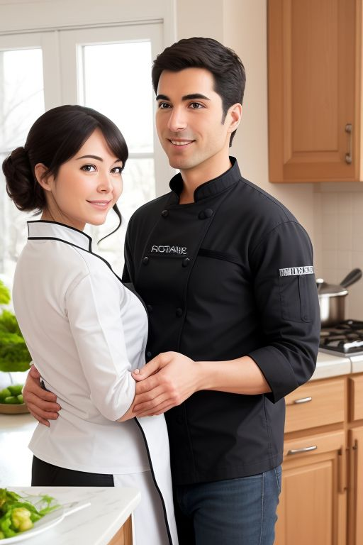
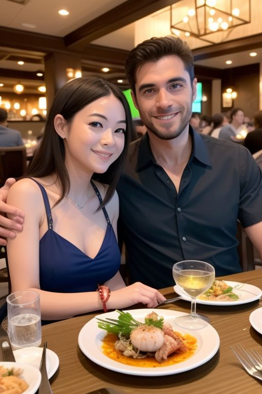

As the days turn into weeks, Nathan and Alice's connection deepened, and their time together became an eagerly
anticipated
part of their lives. They relished the simple pleasures, like strolling hand in hand along the Esplanade, watching the
sunsets paint the sky with fiery hues of orange and pink.
Nathan's apartment became a special place where they created new memories together. Twice a week, he would invite Alice
over for dinner, and they would embark on culinary adventures in his cozy kitchen. These evenings were filled with
laughter, shared stories, and the delightful aroma of homemade meals.
Nathan, a skilled cook with a penchant for flavors, took it upon himself to introduce Alice to the joys of cooking. He
was patient and thorough, explaining each step with clarity and offering valuable tips on everything from seasoning to
chopping safely on the cutting board.
Their first cooking lesson was a delightful journey into the world of culinary artistry. Nathan guided Alice through the
preparation of Grilled Chicken with Roast Vegetables, a dish that combined simplicity with exquisite taste. As they
worked side by side in the kitchen, Nathan's calm demeanor and Alice's eagerness to learn created a harmonious
atmosphere.
Nathan showed Alice how to marinate the chicken, imparting the secrets of achieving the perfect balance of flavors. He
taught her the art of selecting fresh vegetables and how to chop them with precision, ensuring safety and efficiency.
The sizzling sounds of the chicken and the savory scent of roasted vegetables filled the air, creating an intoxicating
ambiance.
When they finally plated their masterpiece, Alice couldn't help but marvel at the delicious spread before her. The
tender, perfectly grilled chicken was accompanied by a medley of colorful, roasted vegetables that seemed to burst with
flavor. The dishes looked not only delectable but also a testament to their teamwork and newfound culinary skills.
As they sat down to savor their creation, Alice felt an immense sense of achievement and joy. It wasn't just about the
food; it was about the experience of learning, sharing, and creating something beautiful together. Nathan's patient
guidance had made the process enjoyable and educational, and Alice cherished these moments of togetherness.
Their shared dinners became a symbol of their growing love, a blend of flavors and emotions that created a recipe for a
deep and meaningful connection. With each dinner date, they continued to strengthen their bond, leaving them eager to
discover the many more flavors of life they could explore together.

As their love continued to flourish, an unexpected twist of fate cast a shadow of uncertainty over Nathan and Alice's
relationship. Alice discovered that her studies would require her to move away to Sydney, a revelation that left them
both feeling lost and apprehensive about their future together.
Nathan's job was firmly rooted in Darwin, and he couldn't imagine leaving the city he called home. The tension between
them grew as the reality of their impending separation loomed large. They cherished the moments they had together,
knowing that time was slipping through their fingers.
Weeks passed, marked by countless late-night conversations and tearful goodbyes. Yet, as Alice grappled with her
decision, a brilliant idea began to take shape in her mind. She decided to apply to transfer to a local university in
Darwin, hoping to pursue her studies while keeping their love alive.
With determination and persistence, Alice embarked on a journey to make her dream a reality. She tirelessly worked on
applications to enroll at Charles Darwin University to study Information Systems and Data Science, all while pleading
with her current institution in Sydney to release her from her obligations there.
After weeks of uncertainty and anxiety, Alice finally received the news she had been praying for – she was accepted into
Charles Darwin University, and her previous school granted her release. A wave of relief washed over both of them, as
the future they had feared losing suddenly became a reality.
Around a month later, Nathan took Alice out to a charming restaurant nestled in the Waterfront district of Darwin for a
special dinner date. With the picturesque harbor as their backdrop, the ambiance was nothing short of enchanting. As
they ordered their meals, Nathan took a deep breath, looked into Alice's eyes, and professed his love for her in a
heartfelt declaration.
With a trembling voice, he asked the question that had been burning in his heart, "Alice, will you be my girlfriend?" At
the same moment, he presented her with a small, beautifully wrapped gift. Alice's heart raced with anticipation as she
unwrapped it to reveal a stunning necklace.
Overwhelmed with emotion, Alice beamed and replied, "Yes, Nathan, I'd love to be your girlfriend." Their smiles radiated
happiness as they sealed their commitment with a kiss, their love now officially and openly declared.
Later that night, after an incredible dinner filled with laughter and love, they took a leap into the digital world of
social media. Hand in hand, they announced their relationship to the world, changing their status to "in a
relationship." For Alice, this was an extraordinary moment, as she had never before shared such a personal aspect of her
life on social media. It felt like a significant step in their journey together, solidifying their love for all to see
and cherish.
